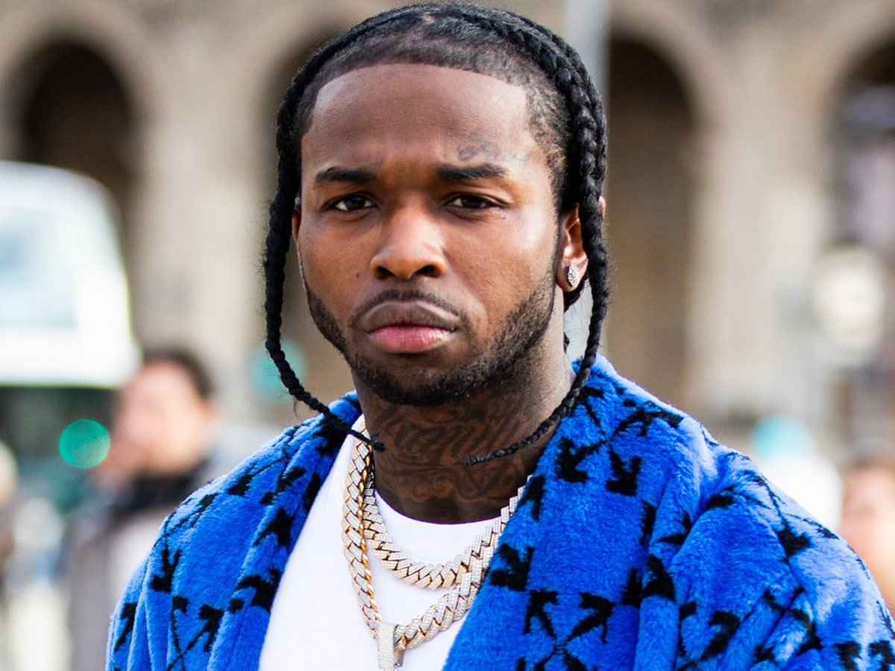

Pop Smoke
Bashar Barakah Jackson (July 20, 1999 – February 19, 2020), known professionally as Pop Smoke, was an American rapper, singer, and songwriter. He was considered by many to be the face of Brooklyn drill. Born and raised in Canarsie, Brooklyn, Pop Smoke began his musical career in 2018 upon releasing his debut single titled "Mpr (Panic Part 3 Remix)". He often collaborated with UK drill artists and producers, who employed more minimal and aggressive instrumentation than drill artists from Chicago. Pop Smoke rose to fame with the release of his breakout single "Welcome to the Party" in 2019.

POVRATAK